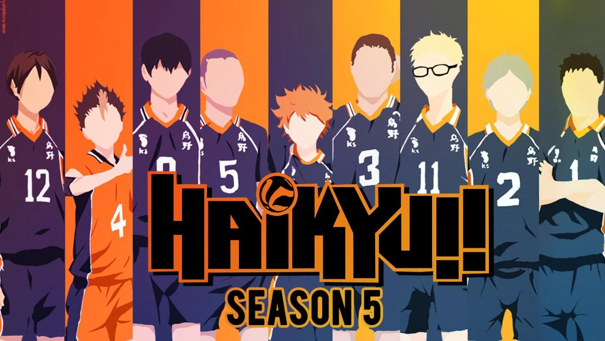
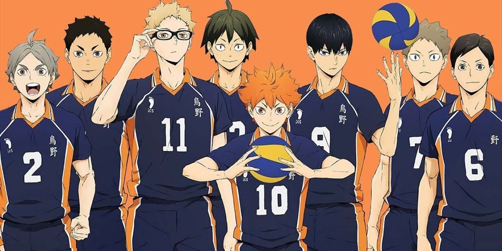

Hinata Shoyo, a short middle school student, gained a sudden love of volleyball after watching a national championship match on TV. Determined to become like the championship's star player, a short boy nicknamed "the small giant", Shoyo joined his school's volleyball club.
I think that this anime is worth watching the anime is both keeping the viewer intrigued and exited for whats about to happen its a fun anime to watch even if your not into sports .The storyline is pretty basic though an underdog team trying their hardest to come up and shine. But I think what makes the anime worth a shot is the character design. Each of the characters has their own unique traits, has their own personal issues and their own problems to deal with .I think no character outshines the other. The intros are really amazing and inspiring. The anime is really hillarious in some of its aspects and you are sure to laugh out loud in each and every episode no matter what is presented in front of you. I give this show a 10/10. Hinata shoyo is the main protagonist in Haikyuu For the majority of the series, Hinata was a first-year student at Karasuno High and one of the volleyball team's middle blockers. hinata's love for volleyball started In his last year of middle school, three first-years joined the volleyball club. Despite having new members, Hinata still lacked enough players to form a team so he asked his friends Izumi and Kōji, who were from the basketball and soccer club respectively, to help out. They joined Hinata's team and soon attended their first volleyball tournament. It turned out that Yukigaoka's first opponent would be Kitagawa Daiichi Junior High, the tournament favorite. While everyone thought that Yukigaoka would lose, Hinata remained convinced otherwise. Upon seeing their opponent, Hinata grew nervous right before the match and ran to the bathroom. Afterward, he overheard some second-years from Kitagawa Daiichi insulting his team. He defiantly talked back only to be ridiculed for his size. Just then, Tobio Kageyama, Kitagawa’s “King of the Court”, appeared to berate his teammates for looking down on their opponents. His tirades didn't end there as he turned to Hinata. Kageyama insulted Hinata's lack of height and his foolish determination to win despite it. In response, Hinata proclaimed he can jump and will win every match.When the match started, Hinata jumped high for a spike but found his spike easily blocked by Kitagawa Daiichi blockers. He remained positive, but it soon became clear that Kitagawa Daiichi was one-sidedly dominating the match. Faced with an impossible situation, Hinata still refused to give up to the point of risking injury just to chase down a ball. When asked about it, he simply said it's because they haven't lost yet. In the following play, Izumi made a missed toss but Hinata stunned everybody when he still managed to hit it across. The spike, unfortunately, landed out of bounds and cost them the match. However, Kageyama has noticed Hinata's incredible stamina, jumping power, and pure determination to win. He gained a little more respect for Hinata but, at the same time, was also outright disapproving of Hinata wasting his potentials.The number of sets Hinata's team won was 0 and the match only lasted 31 minutes. Hinata remembered Kageyama's name and his title as the "King of the Court". After the match, Hinata approached Kageyama and announced that he will overthrow the setter from his title. Kageyama accepted his challenge but told him to grow stronger first. Afterward, Hinata trained rigorously by jogging, practicing with the girls’ volleyball team, and joining the neighborhood mothers' team. Soon, he graduated and entered his dream school, Karasuno High. Since Hinata currently lives in Yukigaoka with his mother and younger sister, he travels to Karasuno each morning by a 30-minute bike ride through the mountains. Coach Ukai has noted it would be a 40-minute ride normally, but Hinata has grown used to traveling over mountains ever since junior high.
  Fairy Tail naruto haikyuu Alexa's Amime